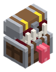

Bestiario › Fauna


Variantes de color
Imitador de Cofre / Mimic
Hostil Saltador Fauna
Cofre dorado que en realidad es una boca: espera quieto en la mazmorra y muerde a quien intenta abrirlo; si lo matas, suelta botín raro.
1Nivel
30Vida
8Daño
20Armadura
0,5Regeneración
3Velocidad
Dónde aparece
Efectos de sus ataques
- Sangrado · 25 % · 3 s (al golpear)
Archivo de datos: mods/mobs/dungeon_mimic.json · tamaño del vóxel 0,1 m · cuerpo de 1 × 1 bloques